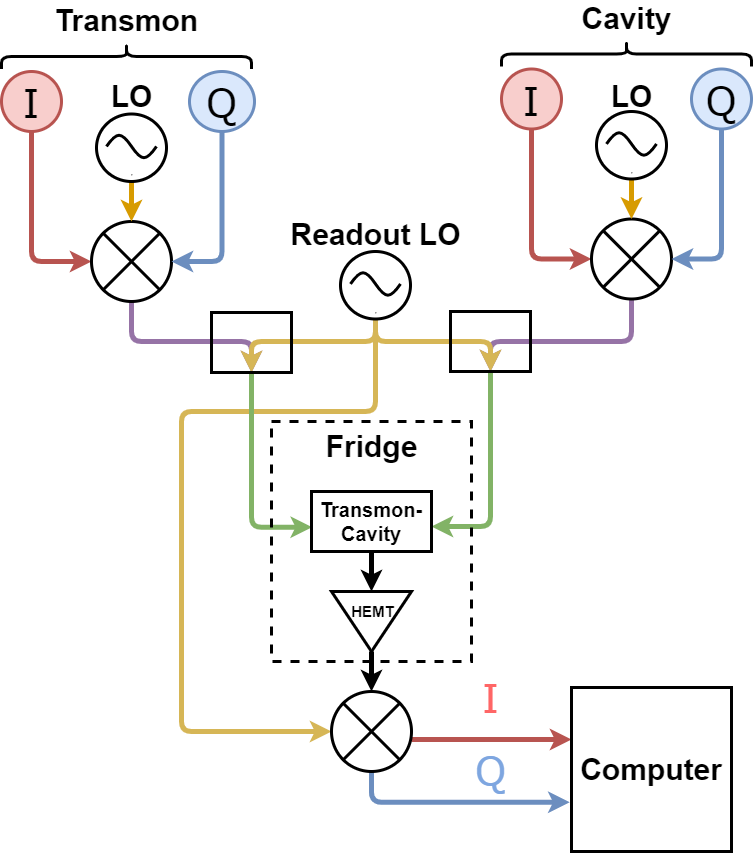
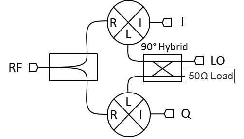

{#fig:Ideal-Mixer
width="0.3\columnwidth"}
{#fig:Ideal-Mixer
width="0.3\columnwidth"}Controlling a Superconducting Quantum Computer
Daniel Cohen Hillel
Supervisor: Dr. Serge Rosenblum
Advanced Project in Physics A (20382)
The Open University of Israel
The Weizmann Institute
A classical computer is, essentially, a calculator, not of real numbers but of binary numbers. A binary digit ("bit" from now on) can be in one of two states, usually represented by 0 and 1. We can use logic gates to control and manipulate bits to do various calculations. These are the building blocks of the classical computer. With the ability to do calculations on bits, and the ability to store bits in the memory we can construct a computer.
So what is a quantum computer then? Well, if the classical computer uses bits to do calculations, a quantum computer uses quantum bits ("qubits" from now on) for calculations. A qubit, much the same as a bit, has two states, a 0 state and a 1 state (denoted by and for reasons we'll see later). The principal difference between bits and qubits is that a qubit can be in a superposition of the two states. We can use this property to our advantage by manipulating the state of a quantum computer so that desired outcomes interfere constructively, whereas undesired outcomes interfere destructively.
“Nature isn’t classical, dammit, and if you want to make a simulation of nature,you’d better make it quantum mechanical, and by golly it’s a wonderful problem,because it doesn’t look so easy.”
- Richard Feynman
The possibilities that quantum computation allow are unprecedented. From simulation of drugs for developments of new cures to unbreakable encryption, quantum computing promises a lot.
One of the most famous algorithms in quantum computing is Shor's algorithm, a quantum algorithm for factoring large numbers. In classical computing the way to factor a number is to verify if small numbers divide it, one by one. Modern encryption method require you to factor a large number[^2]. With classical computers this is a nearly impossible problem, since solving this problem requires a time that scales exponentially with the number of bits. This means that if we increase the size of the number that we need to factor by just just one bit, the time required to factorize the number increases by a factor of two! Shor's algorithm, on the other hand, uses the power of quantum computing to solve this problem in polynomial time![^3]. This means that increasing the size of a number to be factorized could quickly become an impossible task for a classical computer, it won't affect a quantum computer as much.
While Shor's algorithm is a great example of the power of quantum computers, and it is also probably the most famous quantum algorithm, it is by no means the most interesting example. Decrypting messages and breaking the world's cryptography isn't really a good motivator to try to create quantum computers. Let's look at a more useful, optimistic algorithm, Grover's Algorithm.
Grover's algorithm is a quantum algorithm that finds the unique input to a black box function that produces a particular output value, using just evaluations of the function, where is the size of the function's domain. For a classical algorithm to do this it would take evaluations. Therefore, Grover's algorithm provides us with a quadratic speedup. Roughly speaking, given function Grover's algorithm finds when given a specific . This algorithm could be used to search in databases quadratically faster then with a classical computer.
There are more quantum algorithms that were developed in the last several decades, and even more algorithms that have yet to be developed that might have impactful applications in the future.
Physically, a qubit is a two level quantum system. We call the first level and the second level . As we know from quantum mechanics, the qubit could be in a superposition of the two states.
Mathematically, we think of qubits as 2-dimensional vectors, where the first term corresponds to the state and the second term corresponds to the state, so a qubit in a state can be represented as
The complex pre-factors of each state are called probability amplitudes, since they are related to the probability of the qubit to be in that state. The probability is given by the absolute value of that state squared
In the example I just gave, the qubit has a chance to be in the state and a chance to be in the state.
In this world of qubits as vectors, we think of logic gates (quantum gates), as unitary matrices. When the qubit goes through a logic gate, the resulting state is obtained by multiplying the initial state by the matrix. Let's look at an example for one of the simplest logic gates we have in classical computing, the NOT gate. A quantum implementation of the NOT gate takes to and to ). The matrix that achieves this is
Known as (Pauli matrix ). As a simple example to see how this works, if we input into the NOT quantum gate, we get as a result
As we expected, NOT is . There are infinite 1-qubit quantum gates, while there are only four possible one bit gates on a classical computer[^4].
The last thing we need to know to understand the basic of quantum computing, is how to represent multiple qubits. If we have several of qubits in our system, we think of all the qubits together as one vector that is the tensor product[^5] of all the qubits. Let's say we have a and qubits in our system, we represent that by and it is equal to
The tensor product of N qubits has coefficients! This is yet another clue of the power that quantum computers have compared to classical computers. A quantum gate on multiple qubits is thus a by square matrix.
Now that we have the basic tools of quantum computing, we can use them to get motivation for the amazing things quantum computers can do
The physical implementation of the qubit itself isn't the subject of this project but we still take a look for a bit on how would you implement such a thing. A problem we have to face when making a quantum computer is what physical phenomenon would be the qubit. We need some sort of two level system that we can easily measure and manipulate, while also staying coherent[^6] and usable. For classical computers we already have this figured out for years, a bit is a voltage on a wire, 1 is one there is voltage on the wire and 0 if there's none, simple. For a quantum computer this is much more complicated, there are many quantum phenomena we can use as our qubit, such as the energy level of an atom, the spin of an electron, the polarization of photons and so on. It is not so obvious what should be the physical realisation of the qubit. This project is about a superconducting quantum computer, with superconducting qubits.
Superconducting qubits are microwave circuits in which the cooper-pair condensate effectively behaves as a one-dimensional quantized particle. By inserting Josephson junctions, the circuit can be made nonlinear, allowing us to isolate the qubit from higher-energy levels and treat it as a two level system (instead of the many level system that it really is).
This topic is covered in appendix 8, refer there for any additional information, preferably read the appendix after reading chapter 2.
The main references for this chapter were two great books on quantum information I recommend everyone to read. The first is the well known, de-facto book on quantum computation and information. "Quantum Computation and Quantum Information" written by Michael Nielsen and Isaac Chuang also known as "Mike and Ike". This book covers everything.
The other book I used was "Quantum Computing for Computer Scientists" by Mirco A. Mannucci and Noson S. Yanofsky. It has, in my opinion, clearer explanations on the pure mathematical nature of quantum information, although it is not as comprehensive as "Mike and Ike".
This chapter introduces concepts in Quantum Optics. The implementation of quantum computers we discuss in this manuscript has a qubit which is a two level system[^7] interacting with light (both classical and quantum) inside a resonating cavity.
Before we dive into anything new, we'll start by going over the method to quantize any oscillating phenomena introduced by Paul Dirac in his 1925 Ph.D. dissertation.
Any system of which we have a classical description can be quantized following a process known as canonical quantization. A classical system can be described by pairs of canonically conjugate variables, satisfying the Hamilton equations
is called the canonical coordinate and is called the canonically conjugate momentum to the coordinate .
To quantize the system we need to replace the dynamical variables with canonically conjugate operators satisfying the commutation relation
The Hamiltonian of the quantum system is obtained by replacing the classical Hamiltonian with the quantum Hamiltonian .
Dirac's method is best used to solve the system of the quantum harmonic oscillator. The Hamiltonian of the system is
To solve it you introduce the annihilation and creation operators (Also called the "ladder operators"), and respectively. The ladder operators satisfy the commutation relation . Since , these operators are not hermitian and therefore not observables of the system, but every observable of the system can be expressed using them. The operators are
The Hamiltonian is therefore
The energy eigenstates are denoted where is the eigen state of the energy level, . A set of important relations between the eigenstates the the ladder operators are
From these relations the ladder operators get their name, since you can think of them as ways to climb up and down the energy "ladder". These eigenstates are called the number states or Fock states after Vladimir Fock who developed this representation. The number states are also the eigenstates of the number operator , with eigenvalue , , hence the name.
Maxwell's equations in free space are
[[eq:optim]]{#eq:optim label="eq:optim"}
Taking the curl of [eq:Maxwell-3] and [eq:Maxwell-4] yields
[[eq:curl-]]{#eq:curl- label="eq:curl-"}
Using the vector identity
We obtain from [eq:curl-E] and [eq:curl-B]
Using [eq:Maxwell-1] and [eq:Maxwell-2] to cancel the left most term we get
Replacing with since the phase velocity is the speed of light for electromagnetic radiation in vacuum
These equation are called the homogeneous electromagnetic wave equations. We'll pick a polarization, arbitrarily, to be in the x direction. The equations become
Now that we have the homogeneous electromagnetic field equations at hand we can solve them. We solve [eq:Homo_electro_wave_pol] using separation of variables,
Yielding the solution,[^8]
where is the effective volume of the cavity, is a time-dependent amplitude with units of length, for an integer , and is the frequency of the mode.
The Hamiltonian of a single mode is hence given by
Going from dynamical variables to operators, and that satisfy the commutation relation , we get
This is the same Hamiltonian as for the harmonic oscillator. Electromagnetic radiation acts as a harmonic oscillator.
Let's introduce creation and annihilation operators
In term of the creation and annihilation operators, the electric and magnetic field operators become
And we can write the Hamiltonian as
Ignoring the zero-point energy .
Since the eigenstates of the quantum harmonic oscillator are the number states , they are also the eigenstates of electromagnetic radiation. We can show that the momentum operator of electromagnetic radiation takes the form . Where is the wave number of the electromagnetic wave. Applying the momentum operator to the number states we see that
This is an important result, the state has well defined energy and momentum, same as particles, each with energy and momentum , we call these particles photons. Hopefully you now see why these are called number states, they correspond to the number of photons in the cavity.
Our goal is to mathematically model the Hamiltonian of a system of a two-level system, such as an atom, interacting with a single quantized mode of an electromagnetic field inside an optical cavity. First we'll divide the system into 3 parts, The atom, the cavity, and the interaction between them.
We separate the Hamiltonian as
We'll now calculate each Hamiltonian separately
We already calculated the Hamiltonian of the cavity and it is given by equation [eq:cavity_hamiltonian] as
The atom is a two-level system, meaning its state is in a general superposition of the ground, , and excited, , states. We know that for every energy eigenstate, with energy . We can use these eigenstates to spectrally decompose the Hamiltonian, . In our case, with only ground and excited states, the Hamiltonian is
Using the vector representation of these states we'll write
Again, we define the zero point energy so that the first term becomes . The energy difference is associated with a frequency and from the de-broglie relations so . The atom Hamiltonian is therefore
The atom-cavity coupling comes from the interaction between the atomic dipole, , and the electric field of the cavity mode, . The corresponding Hamiltonian is
Where we assumed that the atomic dipole and electric field are parallel[^9]. We'll introduce the atomic transition operators
Due to parity selection rules, only the off-diagonal, only the off-diagonal elements of the dipole operator are nonzero so we may write
Thus, the interaction Hamiltonian is
2 eq:interaction-hamiltonian Where is the amplitude of the interaction. From [eq:cavity_hamiltonian] the cavity ladder operators and evolve as
And similarly we can show for the free evolution of the atom
We can write while approximating
We can see that the last two term vary much more rapidly than the first two. Furthermore, the last two terms do not conserve energy (They correspond to [photon addition + atom excitation] and [photon reduction + atom relaxation]). Therefore, we can drop the quickly rotating terms[^10], yielding
Finally, we can write the full JC Hamiltonian
As you might have noticed, we are classical creatures, I'm (fortunately) not in a superposition of being dead and alive at the same time. As classical creatures, if we want to interact with the quantum world we need to do so with classical means, with a classical interface to the quantum world. Back to the Jaynes-Cummings model, what happens when we introduce a classical electromagnetic field (such as the microwave drives that control the superconducting system)?
We can do the full rigorous way to calculate the interactions between the quantized atom and the classical electromagnetic field, but instead, we can use a "hack"[^11] to make the calculations much simpler, since we already calculated the interaction between the atom and the quantized electromagnetic field. The Hamiltonian of the full quantum interaction, as given in equation [eq:interaction-hamiltonian] is
We can go from the quantized field to the classical field by simply replacing the field operators with dynamical variables representing the strength of the field, and . We can also replace with the Pauli matrix and get
The transition from the middle term to the right term is allowed since we know that the Pauli matrices are observable quantities, hence are hermitian conjugates of themselves. is the amplitude of the classical field, later we'll replace it with and for the drive fields since the classical field is not constant and it is, in fact, what we control in the system, but I'm getting ahead of myself, more on this will be shown in the optimal control chapter 3.
As we've in appendix 6, when an atom interacts with a classical electromagnetic field, it oscillates between higher and lower energy states. These oscillations are the so called Rabi Oscillations and are an important result in the atom-photon interaction theory. There is one catch though, if the electromagnetic field doesn't have exactly the same energy as the energy difference between the two levels of the atom, the atom will never reach fully the higher energy state (see figure 20). The difference between the energy of the electromagnetic field, and the atom energy difference is called the detuning, . The dispersive limit occurs when the detuning is very large compared to the frequencies (in terms of the variables used in appendix 6, the limit is for ).
We are now going to consider the energies of the states and , for any . The energies are the eigenvalues of the Hamiltonian[^12]. We can write this Hamiltonian as
Where .
The eigenvalues of this operator are
Where the is for the ground state of the atom and for it's excited state. For we can approximate the square root as a Taylor series, and the overall expression is
We can replace the number with the operator . Moreover, the operator can be used to "replace" the , since it's eigenvalue is for the ground state and for the excited state. The overall Hamiltonian is of the form
The physical interpretation of this new expression is that the frequency of the cavity changes by depending on the state of the atom. Or equivalently, the atom transition frequency changes by for each additional photon in the cavity.
As you'll soon find out in the optimal control chapter, we're going to develop a system that is some sort of a black box. We can't really control directly how it works, we can only make indirect changes to try to get everything to work[^13].
This is why we want to get as much insight about the system as we can, and understand that insight in a way that allows us to create intelligent changes to the system according to the data we gather. Visualization of quantum states give us a better understanding of the system performance, and allows us to better diagnose errors. There are many more ways to visualize quantum information than I show here,but the methods I will present are sufficient for our purposes.
The simplest way we can visualize the quantum system is using population graphs. In a population graph, you plot the probability that the quantum system is in each of its possible eigenstates. For a time-dependent unitary operator, , acting on an initial state , the population of the eigenstates over time is given by
Although they are simple, population graphs are a really powerful, simple tool you can use to visualize the system.
As it turns out, you can represent any qubit in the form[^14]
This representation describes a sphere with polar coordinate and azimuthal coordinate . Since this is the case, it's very useful to visualize a qubit state as some point on a sphere, the Bloch Sphere. An example of the representation of a state using the Bloch sphere is shown in Figure 1
{#fig:Bloch-Sphere width="0.3\columnwidth"}
The Wigner function is the distribution in the phase space of a continuous variable quantum system[^15]. For classical systems, phase space distributions correspond to a classical probability distribution. However, the Wigner function the distribution also involves quantum uncertainty. Wigner functions can take on negative values in small regions, and are therefore quasi-probability distributions. This is allowed, since only areas larger than are ever allowed to be measured, according to the Heisenberg uncertainty principle.
The Wigner function of a particle with wave function , is defined as
An interesting example to use of the Wigner function is looking at the Wigner function of a Fock state. The Wigner distribution of a Fock state could be calculated directly from definition and the resulting expression is[^16]
More importantly, we can look at a heat map of the Wigner function, as a nice visual aid to understand the state. An example of the state Wigner distribution is shown in figure 2
{#fig:Fock-State-Wigner width="0.3\columnwidth"}
The standard introductory book on this subject (which is also the one I used for reference) is "Introductory Quantum Optics" by Christopher C. Gerry and Peter L. Knight.
Another great resource is the series of online lectures taught by Prof. Alain Aspect from École Polytechnique.
In this chapter, we tackle the problem of Quantum Optimal Control. We control our quantum system by sending some (classical)electromagnetic pulse into a cavity. An obvious question arises: what pulse shape needs to be sent to achieve a particular operation on our quantum system?
It turns out that this questions does not have an easy answer. In the rest of the chapter we'll try to give an answer using an algorithm called GRAPE.
Although in some cases we can calculate the desired pulse analytically[^17], most of the time this isn't an option. Often, we need to use numeric means to find an optimal pulse. To find the desired pulse numerically, we can model our system on a classical computer and simulate what happens when you send a pulse. Using the results of the simulation, we try to change the pulse until we get the desired effect.
So what's GRAPE then? GRAPE in an acronym for GRadient Ascent Pulse Engineering. When we model a quantum system, in our case, a qubit interacting with a cavity, we can model the physical information about the system using the Hamiltonian of the system. We can split the Hamiltonian into two. There's the Hamiltonian that nature gives us, of how a qubit behaves and how it interacts with its surrounding. And there's the Hamiltonian we control, using electromagnetic control pulses. We can send any possible pulse shape. To account for that fact, we treat the pulse as a function of time, as a step-wise constant function. The pulse is, essentially, just an array of many variables, and we want to find the values that give the desired result. This is a classical case of an optimization problem. To optimize the values, we set a cost function that tells us how "good" the current pulse is.
In principle, we could use a brute-force search and check every possible pulse until we find one that minimizes the cost function. This method is inefficient. A better way to optimize the function is by calculating also the gradient of the cost function, and using an optimization algorithm[^18], to find the minimum of the function efficiently.
{#fig:step-wise-const width="0.3\columnwidth"}
When our desired operation is to prepare our quantum system in a predetermined state, a good figure of merit of how close our system is to the desired state is given by the fidelity. The fidelity is a measure of the "closeness" of two quantum states, The fidelity is when the two states are orthogonal, and if they are identical. The fidelity is given by the magnitude of the overlap between the two states squared[^19].
The infidelity, between the two states, can be conveniently used as the cost function in our optimization procedure[^20]. Given an initial state and a target state, along with the Hamiltonian and pulse information, we want to be able to calculate the fidelity for any given pulse. To do so, we need to solve Schrödinger's equation for the pulse
In the previous chapter we characterized the Hamiltonian of the system (equations ([eq:JC-hamiltonian]) and ([eq:dispersive-hamiltonian])),
where is the (time-independent) Hamiltonian of the system without the drives (given, for example, from the Jaynes-Cummings model). Each is the amplitude as a function of time of the control drive pulses, and each is the (time-independent)Hamiltonian describing the interaction between the control pulse and the rest of the system. We call these Hamiltonians the drive hamiltonians. Our goal with GRAPE is to find optimal .
On each constant step of the amplitude functions , the entire Hamiltonian is constant. Luckily, the solution of the Schrödinger equation for a constant Hamiltonian is easily solved by
If we choose and as the end points of a step of the Hamiltonian, the total Hamiltonian of the system is constant so the integral is just a simple multiplication by which we'll write as . The solution becomes
In order to calculate the solution over the entire pulse we need to solve for the first step, then find the solution by the end of that time-step, and use it as the initial condition for the next time step, repeating for each time step. The solution until the time step is simply the product of the previous solutions for each time step
With in hand, we can calculate the evolution of the state over the entire pulse
This way, if we want to calculate the fidelity after applying the drives, we can simply calculate the fidelity between the target state and the final, calculated state
As mentioned, if we want to optimize the cost function efficiently we'll need to calculate the gradient of the cost function along with the cost function itself.
For simplicity, we'll first derive the gradient of the overlap
We can then get the fidelity by noting that . We want to differentiate the overlap by each control parameter. To do so, note that is defined as:
And when differentiating by a control parameter only one is affected,
We can write that for a constant Hamiltonian (from Schrödinger's equation)
And approximate the derivative in the limit of small by writing
Theoretically, we have everything we need to calculate the gradient, but it's still rather complex computationally ( complexity). A different method can be used to reduce the computational overhead.
The derivative of the cost function by a control parameter of the pulse has become
Where we defined two arrays, and , the multiplication components before and after the derivative of H
We can see from [eq:cost_init_deriv] that
Now all we need is to do calculations in the beginning ( for and for ), and then calculating the actual gradient using equation [eq:cost-function-b/fwd]. This improves the computation complexity from to , while the memory complexity stays .
It's important to note that is not the fidelity, but the overlap. We can get the fidelity from by
since might be complex this derivative is a bit less trivial than it might seem. We can write as , where and we get that
We can notice that . More importantly, we can see that the real part of that expression is exactly what we need. Putting it all into one formula we get
Now all you need is to plug [eq:cost-function-b/fwd] and [def:overlap] into [eq:fidelity_gradient_final] and you got your gradient :)
Let's do a little test now to see that everything is working well. The simplest pulse you can send is the pulse that takes the qubit from being in state to state , where the transition frequency is set to Ghz (hence the period is ns). We discussed this situation in appendix 6 so we know how the solution should look like. Running our GRAPE code with some random initial pulse we get
{#fig:GRAPE-first-example width="0.8\columnwidth"}
Amazing! From some random initial pulse we got sinusoidal waves with Ghz frequency, just as predicted in appendix 6.
Before we get too excited, there are a couple of things weird with this pulse. The first, more obvious problem, is that although the waves are sin and cos as expected, they're still pretty jagged-y, there is some randomness on top of the wave and it's not as smooth as we expected. This is since small random changes don't really change the final result[^21]. In addition, high-frequency components generated by the computer do not have an effect in reality. This is due to the limited bandwidth of our pulse generator and RF circuitry.
Another problem, that is not immediately obvious, we can only see if we look at the population graph of the qubit over the duration of the pulse. We expect the graph to start at and end at for and start at and end at for . Let's look at that graph for the initial random pulse and for the optimized pulse
{#fig:GRAPE-first-example-level-population width="1\columnwidth"}
As expected, the initial random pulse doesn't change the pulse almost at all. The optimized pulse on the other hand is problematic. The population of for example, goes from 0 to 1 and then goes back to 0 to start over again. Ideally, the population will change from 0 to 1 (and vice-versa) smoothly, only once.
This happens because the amplitude of the optimized pulse is too big. As we defined the optimization, the algorithm doesn't care that the population acts weirdly in the middle of the pulse as long as it ends at the desired state.
To solve these problems (and more we'll talk about), we introduce constraints to the algorithm.
Since instruments have physical limitations, for example, on the maximum amplitude of a pulse, we must add constraints on the computer calculations to not exceed these limitations.
We define a set of constraints on the solution , and associate a Lagrange multiplier to each constraint[^22]. Our goal is to minimize
Let's add a constraint to each of the most problematic physical limitations.
This is the most obvious physical limitation. We can't generate pulses with infinite energy, so we have to restrict it. There are two ways we can do so, the first is to create a hard cut-off amplitude. No matter what, the amplitude will never go above this amplitude. We usually want this cut-off to be the maximal output amplitude of our pulse generator. But normally we don't want our generator to work at its absolute limit[^23], so we can add also a soft amplitude maximum by "rewarding" the cost function to stay at a lower amplitude. Let's see how we would implement such a thing, starting with the hard cut-off.
Instead of controlling and changing the amplitude () directly, we'll introduce a variable and relate them as
As you probably guessed, is the maximum amplitude of the pulse. Since the optimization algorithm can only change , the amplitude of the pulse will always be between and . Unfortunately, this changes the gradient of the cost function since we now want the derivative with respect to instead of . We can relate the two
We can use the derivative we got from [eq:fidelity_gradient_final] and simply calculate and we again have the gradient.[^24]
For the soft amplitude penalty all we want is that bigger amplitudes bigger cost function. Since our algorithm seeks to minimize the cost function, this will lead to the overall amplitude being smaller. The way we do so is simple, we can define a constraint that sums all the amplitudes of the steps of the pulse, so
Still, since it is added to our cost function we need to find the gradient of the penalty as well. In this case it's rather simple since it's a basic parabola
and now we have all we need in order to add this penalty to our cost function.[^25]
The next limitation is the maximum frequency our AWG can create because the device can't change the voltage instantaneously. Again, like we had with the amplitude limit, there are 2 types of limits we can make, hard and soft. Let's start with the hard limit.
We have some frequency which is the maximum frequency that our AWG can generate. To make sure that our simulation doesn't produce such a pulse we can go from time space to the frequency space with a Fourier transform
The numerical optimization algorithm controls which is in the frequency space. Now if we want to limit the frequency we can simply set to 0 any frequency that is above our maximum frequency
The gradient of the new cost function is simply the Fourier transform of x
And we know from previous sections. It's important to note that the hard cut-off of the amplitude and the hard cut-off of the frequency do not work together since one is in time domain and one is in frequency domain. This is not much of a problem since we can compensate with the soft limits that do work well together (since they require adding to the cost function instead of changing coordinates). In my simulations I use the amplitude hard limit instead of the frequency one since it is easier to work with.
For the soft limits, we're limiting the slope (derivative) of the pulses and not the frequency directly. The slope of a step function is simply , we want to limit the size of the slope so we'll look at the expression instead. Summing all the slopes (to get an overall slope size of the entire pulse) we get the expression[^26]
Unlike the amplitude, since the slope of the boundaries is not well defined we'll have the edges defined differently than the center of the pulse. The gradient of in the center is a simple derivative, notice that each appears only twice in the sum
It's nice to see that the expression looks like how'd you numerically estimate the second derivative, since the gradient of the slope (which is the derivative) is the second derivative. Now we need to define the gradient at the edges, you can see that the derivative of depends on his neighbors on both sides. Since the first and last element of the pulse don't have 2 neighbors they are treated a little differently. each of the edges appears only once in the sum [eq:g_slope] unlike the others that appear twice, we can simply take the derivative of that one term and get
Now, before we continue, we'll add another small constraint that will also solve the problem of the slope at the boundaries. It might seem weird at first, but we want to pulse to zero-out at the edges. This is since our AWG device can't immediately start a pulse with some amplitude, it can't get from 0 to that amplitude instantaneously (for the same reason we limit the slope in the first place). This could be achieved by simply setting the first and last steps of the pulse and their gradient to 0.
This solves the problem we were trying to solve we were having with the slope at the boundaries, since the gradient is 0 at the edges and does not depend on its neighbors.
Now that we have both amplitude constraint and bandwidth constraint we can use them to get a nice, smooth solution, that any wave generator would be happy to produce
{#fig:band-amp-const-qubit width="1\columnwidth"}
The pulse is exactly what we expect it to be. More importantly, if we look at the population graph of the levels, it does exactly what we want, go from state to state without going back and forth.
{#fig:band-amp-const-level-population width="1\columnwidth"}
Another interesting visualisation of the success of this pulse is the path of the qubit on the Bloch sphere over time (see the last section in chapter 2). Plotting the populations on the Bloch sphere we get
{#fig:band-amp-const-blcoh width="0.4\columnwidth"}
As you can see, the path of the qubit isn't a straight line, but some loop, completing a full rotation around the axis. This is explained by the fact that the base Hamiltonian of the qubit is , where is the Pauli matrix Z. This matrix corresponds to rotation of the Bloch sphere around the axis. This is why we can think of the entire Bloch sphere as always rotating with frequency around the axis, this is why a "straight" path is actually one that does one loop around the axis.
As much as I wouldn't mind waiting a few nanoseconds longer for the qubit operation to end, the qubit itself isn't as patient as me. A state-of-the-art qubit would last, at most, few hundred microseconds (and that's a very optimistic estimation). We simply don't have the time to wait for the operation to end if we want to run some complicated quantum circuit. This is why we want to add a constraint on the duration of the pulse. This way, if we set the total duration of the pulse to longer than the shortest possible pulse, it would find the shorter pulse and the rest of the pulse will change nothing (see figure 9)
The constraint is fairly straight forward, add a penalty for any time a fidelity of 1 isn't achieved. Put into an equation we get
Where is the fidelity at time step .
We can rather simply calculate the fidelity at any given time since they are already calculated in order to find the fidelity in the last time step. We can simply modify the loop that calculates the final state into giving the fidelity at each time step and sum the results.
Luckily for us, the calculation of the gradient is also pretty simple. The gradient of the fidelity at each time step is calculated the same as the gradient of the fidelity we calculated in the beginning of the chapter[^27]
The pulse duration constraint works nicely to complete the other constraints. Without this constraint, the pulse will "try" to use all it's time to get the result we desire. When running the algorithm without the constraint we can get problems if the duration we gave to the pulse is too long or too short. With this constraint on, we can simply give the algorithm a duration that we know for sure is more then the minimum required time, and the algorithm will simply use the minimum time it needs, and no more. On the other hand, if we didn't have the amplitude (and bandwidth) constraints, the algorithm might find that it's best to just give a super-strong pulse for a tiny amount of time, but that's not physically possible as we discussed. This is why we can think of the constraints working together to "box in" the pulse into an ideal "size".
If we run GRAPE now, with all the constraints together, and look at the population of all the level over the duration of the pulse, we get[^28]
{#fig:dur-penelty width="0.5\columnwidth"}
As expected, we get exactly what we want, the pulse uses the least amount of time that it needs and then stop. This way, if we pick a long duration for the pulse, instead of the pulse trying to fill the entire time at a very low amplitude, or do several of loops before arriving at the target, the qubit simply takes exactly the amount of time that it needs to get to the desired state under all of the constraints and then stops.
When we did all of our calculation on the qubit we didn't include one detail, it's really hard to create a true two-level system. In the way our qubits are implemented, there are actually more than two levels. It's not a two level system but we treat it as one. Since the higher levels are off-resonance, we can often just ignore them. However, there is some probability of the higher levels getting populated by high-frequency components of our pulses. The shorter our pulses are, the more these higher levels excitation occur. We will prevent those so-called leakage errors by using Derivative Removal via Adiabatic Gate (DRAG) pulses. We can generate those pulses by including more than two levels in our algorithm and changing the Hamiltonian a little bit so it accounts for the off-resonance higher levels.
Before we continue to implement DRAG, let's see if the third level really is that much of a problem. We run a simulation of GRAPE just as we did before but this time with three levels instead of two, and the third level should start and end at 0 population. We get after running GRAPE
{#fig:before-DRAG width="1\columnwidth"}
Well yes, the forbidden level did start and end at population[^29], but in the middle the qubit really became a 3 level system with the population of the forbidden level being really dominant around time ! We can't simply replace the qubit with a 3 level system and make the target of the third level always 0 and call it a day. We can't treat higher levels as just more "qubit" levels, they are unwanted and we need to give them a penalty so the probability of being in a higher level would be always almost zero and change only a tiny bit. There are many ways we could implement such a penalty, the most obvious way is by simply making the probability to be in an higher level into a penalty, summing over all time we get (We'll call the third level of the qubit to not be confused with the Fock state (photon number state))[^30]
We already have that we calculated earlier, so for so good.
Now moving to to complex part of DRAG, the gradient. Let's again define the overlap
now to calculate the gradient we'll derive over
recall that , only appears for , so we can start the sum from . We'll also expand into what it is and get
the only element that depends on is , so we can rearrange the equation as
Now just to keep everything simple and maintainable, we'll define
The equation for the overlap now becomes
Now we got all we need to calculate the penalty of the occupying the higher level and it's gradient. This isn't a perfect solution though, for time steps we need to do calculations to get . This slows down the calculation considerably[^31] and there is a lot of overhead in the way we calculated . We can use a smarter way to calculate it.
Consider a function, very similar to we had earlier (in fact, it's the same function minus multiplying by the target state on the left)
taking the inverse of the resulting matrix we get
by multiplying the two matrices we get (defining their product as )
This is exactly what we wanted! from this we'll define
remember that was already calculated from the gradient calculation, taking the inverse of isn't affected by how many time steps there are, also the multiplications between , and isn't dependent on the amount of time steps, so the entire calculation is complexity.
Let's run now the algorithm and get some results
{#fig:sDRAG-results width="1\columnwidth"}
Nice! state goes directly to , goes directly to and the forbidden level is barley changed throughout the pulse (the fidelity gotten from this pulse is around , so pretty good).
I think that we talked enough about the qubit for now, let's move the the other half of the system, the cavity.
- Carlton Caves
Here's the thing about the cavity levels, there are infinite amount of them. We can make an assumption that the cavity only has levels, but it is still possible that something happens in the higher levels that may affect the physical result. We want to make sure that everything interesting is contained in the levels that we have.
This is quite similar to what we did in the previous section with DRAG, we want to put a penalty on the higher levels. Still, there are two main differences. The first, is that there are much more than one or two extra levels, and as we've seen, the method we used in the previous uses very heavy computation and we can't do it for so many levels. The other difference is that we care less about if some higher level is occupied for a part of the pulse. In the cavity there are higher levels and they're all likely to be but the reason we're limiting the cavity levels is for computing reasons, not physical ones. Unlike the cavity, we really want the qubit dynamics to involve only two levels, so it makes sense that we'll use a different penalty to limit the photon number.
The idea is this, we'll define as the highest level we want the cavity to have. Now let's calculate what will happen if the cavity will have another level, for a total of . Ideally, nothing will change, the new level should start at 0 probability and end at 0 probability with no change in between. If there is a change, will add a penalty to the pulse, so in the next iteration there will be less of a change. We can do so for any level higher than one, so instead of using only we'll some over for reasonable amount of k's.
We'll define as the fidelity if there were levels. Putting the idea into a formula we get that the new cost function is given by
We can double enforce the penalty if we add a constraint making sure there is no change in the fidelity for different levels
The gradient of which is simply the gradient of which is simply
and everything in this expression was previously calculated (they're simply the derivatives of the fidelity and the fidelity itself).
It's important to note that while it might be tempting to leave at a small value so there will be less to calculate (the size of the matrices grows with ), there is good reason to use a high values of . Bigger oscillate at higher frequency (since the cavity is simply a harmonic oscillator), so it's possible to use shorter pulses, and since keeping qubit alive is really a major problem, keeping the pulses short is important to be able to accomplish the most with the time we have with the qubit before it dies.
Lets see what happens if we run the transmon-cavity code. We'll only look at the resulting population graph after the optimization. I warn you that the graph is a bit cluttered. You shouldn't look at any specific details or any specific curve, I didn't put a legend explaining what each curve is. We'll look at it then discuss
{#fig:transmon-cavity-population width="1\columnwidth"}
After you see this graph, you'd think that the constraint didn't work correctly. After all, the transformation is from level to level , but there were many other levels that got occupied during the middle of the pulse. This is a valid guess, but there is an explanation why the higher level would get occupied. The reason is that you can't really create number states directly in a cavity. You can only create coherent states directly. To create number state you need to make the coherent states interfere in a way that creates a number state.
So why then should this graph show it was successful then? Well, I ran the algorithm with 50 cavity levels (!), this means that there are actually 100 curves in that graph (50 of the cavity times 2 of the qubit). If you'd try to count the number of curves that you see you'll probably count 7-8 curves and not all of the 100, this is since most of the curves stay at zero population. This is exactly what we want, the higher levels don't affect the physics of the system, if we add more levels (like in the real world where there are infinite levels) the pulse would still give the same desired result.
Although the GRAPE algorithm is the one responsible to find to optimal control pulse, we still need to give it some initial guess and the algorithm does the rest. You might think that this isn't much of a problem since theoretically any initial guess should arrive at a desired result. The problem is that often the algorithm gets stuck and can't find a result. This could be caused by a number of reasons, the main two are when the constraints are too strong and when the initial guess is not good enough.
When the constraints are too strong, the algorithm might prefer optimizing them instead of the fidelity and what we get is a pulse that achieves horrible fidelity but within the constraints. The solution is simply weakening the constraints (choosing a smaller for the constraint).
The other, harder to solve problem is when the initial guess of the pulse is problematic. For example, if you choose the initial guess to be the most obvious initial guess you can make, constant 0, the algorithm will probably stop after one iteration changing nothing. This is because the gradient of a constant 0 pulse is actually zero, so the optimization algorithm thinks it's in an optimized minimum when in fact, it couldn't be more wrong.
The other simple initial guess you might think of using is a random pulse. After all, we don't know what is the desired pulse so picking a random pulse is as good as any other. The problem with a random pulse is that it is not a smooth function, so the algorithm might find it difficult to get a smooth solution.
There are two approaches we can take to get a good initial pulse. The first approach assumes nothing about the system, it's good since it's really general and can be used in any case, but might be not ideal in some cases. The second approach is when we know roughly how the solution should look like, we can use some pulse that is similar to what we expect and GRAPE will get the actual pulse from that.
In the first approach, we want GRAPE to do most of the work, but not get stuck by some weird problem of the initial pulse. We want a guess that is close to 0, pretty random, but not so much that it would be hard to smoothen. We can get such a pulse by doing a convolution between a random pulse and a Gaussian window
Unlike the first approach, the second approach could look really different for different examples but I'll give some general guidelines you can use the get a good initial pulse. Let's say, for example, you have a 3-level system where the third level isn't wanted (such as in the DRAG example). If you give an initial guess like the one in the first approach, the third level will still be excited by that pulse, and it might be hard for the algorithm to fix this. What you might do in this scenario, is to start with an initial guess that you know excites only the first and second levels of the system but not the third. This is easy since you know the transition frequencies of the atom, from that you know the frequency that excites each level. What you can do is some random pulse that has frequency around the first-second levels frequency difference. So if you look in the frequency space, what you see is some Gaussian distribution around the first levels frequency with some random noise on it.
{#fig:example-engineered-initial-guess width="1\columnwidth"}
Until now we've discussed how to find pulses that take our system from one state to another. This is useful for initializing the quantum system in a desired state. However, the operation is not well defined if we start in a state other than the one the pulse was designed for. In contrast, a numerically optimized quantum gate must perform a well defined unitary transformation on arbitrary states.
Here's the thing, turns out, you can change the algorithm just a little bit and get a GRAPE algorithm that gives you back the optimal pulses that realizes a desired quantum gate, instead of just taking you from one state to another.
To make such gate GRAPE, instead of optimizing for one state transformation, you optimize for initial states that constitute a basis for the entire state space. This way, since quantum operations are linear, a unique transformation on the basis of the state space is a unique transformation on the entire system. The implementation of gate GRAPE is outside the scope of this project.
The best reference I've found on this subject is by far the 2019 dissertation of Philip Reinhold from Yale, "Controlling Error-Correctable Bosonic Qubits", especially the forth chapter. Another great resource is the documentation of the python library "QuTiP", which was used to create some of the graphs here, but it's documentation has some really nice explanations.
Before jumping into the specifics of how'd we control the quantum computer, let's start with a general overview and show how everything is connected.
This is a diagram that shows how the system is connected, from the pulse generator to the cavity.
{#fig:System-diagram width="0.85\columnwidth"}
The and signals are generated in the AWG, the LO frequency comes from a frequency generator and so does the Read Out signal. High Electron Mobility Transistor (HEMT) is a low-noise cryogenic amplifier.
An Arbitrary Waveform Generator (AWG) is a device that we use to generate the pulses we calculated with GRAPE in the previous chapter. To control the qubit we need to send RF signals, typically ranging from GHz to GHz. Such signals can be generated by RF signal generators (also called LO's - local oscillators). In contrast, the AWG sends out slowly varying envelopes, usually with a bandwidth of a few hundred MHz. To bridge this gap, we will mix a fixed-frequency signal from the LO with a time-varying signal from the AWG. In particular, this will also enable us to vary the frequency of the LO in real-time with the AWG. Our goal in the next section will be to achieve this so called single-sideband modulation of the LO signal.
We also want to be able to un-mix the measurement result to get back only the interesting parts of the pulse. The device we'll use for this task is the IQ-Mixer, but before we can get into the IQ-Mixer, we need to understand how a regular mixer works.
The mixer has 2 inputs and one output. When you enter 2 pulses as an input, you get their product as the output (inputting for example and will result in at the output). We draw a mixer in a diagram as
{#fig:Ideal-Mixer
width="0.3\columnwidth"}
The mixer circuit is non-linear. The non-linearity could be achieved with non-linear components, such as diods.
We've seen what's a regular (and ideal) mixer is, but how can we use it for the desired effect? remember, we want to input a high frequency and a lower frequency and we want the output to be a wave with a frequency that is the sum of the 2 frequencies. To do so, we can consider the following diagram
{#fig:IQ-Mixer width="0.5\columnwidth"}
Where the 90 hybrid in the diagram is a 90 hybrid coupler. This device splits the signal into 2 signals at a 90phase difference, hence the name. The square near the RF sign simply adds the 2 waves.
As we can see, the IQ mixer has 3 inputs, In-phase (I), Quadrature (Q), hence the name, and LO. We can also see that there's only one output, RF (although you can reverse the roles of the input and the output).
How can we use this IQ mixer to add frequencies? Let's consider the following inputs[^32]
In this case, the input into the top mixer will be I and a LO, which is . Similarly, the input into the bottom mixer will be Q and 90phase of LO, which is .
The total output (in RF) will be the sum of the two waves
So we get
Perfect! this is exactly what we wanted, the output is a wave with frequency that is the sum of the input frequencies. Only one problem, this simple scheme turns out not to work in practice : (.
If we use a spectrum analyzer and view what frequencies are in the final wave we get the following picture
 {#fig:Full-spectrum-no-corrections
width="0.8\columnwidth"}
{#fig:Full-spectrum-no-corrections
width="0.8\columnwidth"}
Zooming in around the LO frequency we see
{#fig:closeup-spectrum-no-corrections width="0.9\columnwidth"}
What is the problem? We've proved mathematically that it should work, so why doesn't it? The problem is that we can't just assume the waves to come and go with the same phase, the waves travel through the wire at some speed so if we input into two different wires, two waves that are at the same phase, at the other side of the wire they might come at different phases because of differences in wire length, resistance, etc... So what can we do about it? You could try to make identical parts and make everything just perfect but even slight deviation will cause the system no to work properly, a better solution is to input more complex waves and have some parameters to play with so we can simply find the right parameters for the system.
We can analyze the frequency space of the output of out IQ mixer and we can see two types of it not working correctly
Leakage at the LO frequency
Leakage at the sideband ()
We can solve the first type of Leakage, at the LO frequency, by adding DC offsets to the input frequencies (We'll prove this mathematically later), and we can solve the second type of leakage by adding phase offsets to the waves (We'll prove this mathematically later).
Before we can solve the problem, we need to understand what's causing it. As we explained earlier, a phase is created in the wires that connect everything.
Let's consider now inputting into the IQ mixer the same waves but with the phases that were created in the transmission wires instead of what we had earlier
Using the same calculation we did before, we get that
After some algebra we get
This expression is quiet scarier than the one we got earlier... More than that, we get two frequencies instead of one, we've got an unwanted frequency at and the only way to make it disappear is if the phases are equal, . Also the final wave as a phase of , this isn't really a problem and if we define our starting point differently we can set to 0.
Another type of leakage we've observed is leakage at the LO frequency, it makes sense that some of the original wave will go through the mixer untouched. To fix that leakage, we'll need to somehow change the I and Q waves to cancel it out. The simplest way to do so is to add DC offsets to the inputs [^33]
We've seen this story before... the calculation of the RF wave is the same so we'll skip the calculation. The end result is
where is the RF wave before adding the DC offsets.
What we get is the same wave, but now we can play with the LO frequency at the output. Later we'll change the DC offsets so that they will cancel to LO frequency leakage to minimize it.
Now that we have all of our "knobs" we can change and play with, we can start using them to minimize the leakages.
As we've seen in the previous section, there are 4 variables we can "play" with to get the best variables for our system, as long as we don't change the system, these variables stay the same. What we want to do now is to actually find them. Our system is connected like so
We have the Quantum Machine[^34] that generates the I and Q inputs that go into the mixer (and also to an oscilloscope for debugging). There's the frequency generator[^35] that is connected to the mixer and generates 7GHz wave, and there's the frequency spectrum analyzer[^36] that is connected to the computer.
Let's first attack the leakage at the LO frequency. For now we'll have an LO frequency of 7GHz that we want to change by 25MHz (The same variables work for all frequencies this is just as an example)
As proven in section
4.2.4, to minimize this kind of leakage
all we need is to play with the DC offsets of the IQ inputs. To do so,
we first need to define what we want to minimize, which in this case is
simply the power of the frequency at 7GHz, we can measure that power
with our spectrum analyzer, we'll call that our cost function. We have
a 2-dimensional variable space, we need to find where in this space the
cost function is at a minimum. To do so, we'll start by using a brute
force method to find the general location of the minimum in the variable
space, since brute force is very inefficient we can't really use it to
find the exact location of the minimum so we start by only doing a low
precision brute force and then use a different optimization algorithm to
find the exact location of the minimum. We'll use the
scipy.optimize.fmin as the algorithm for precise minimum location.
Now that we've minimized the LO frequency leakage, we want to minimize the sideband leakage. We do that by changing the phases of the IQ waves from the quantum machine, it's important that changing the phases doesn't change the LO leakage and luckily for us, as proven in section 4.2.4 that's whats happening. to change the phases we don't simply specify the phases, we use the correction matrix of the Quantum Machine. This time our cost function is the frequency at , we can do the same as we did in the LO leakage and use first a brute force optimization to find the general location of the minimum and the use the fmin algorithm to find the exact location of the minimum of the cost function (this time in the scale-angle variable space). You can see the result here
{#fig:closeup-spectrum-no-corrections width="0.9\columnwidth"}
The other frequencies aren't completely reduced because nothing is perfect, but ir's pretty close and good enough for this demonstration.
A great book on couplers and mixers I used while writing this chapter is "Microwave Engineering" by David M. Pozar. It provides a much more in depth look on the subject.
Another great resource is the Marki Microwave RF & Microwave knowledge
base at https://www.markimicrowave.com/engineering/. Which provides
useful introduction to many topics in microwave engineering.
We conclude this project with the knowledge and tools to create and control quantum systems, from understanding them theoretically to connecting and calibrating the devices that actually send the control pulses, to creating the control pulses to create arbitrary quantum states and operations.
As with anything in life, this project must to come to an end at some point, each subject we discuss opens a rabbit hole we'll never see the end of.
A natural next step for this project would be to implement the gate GRAPE. explain exactly how the gate GRAPE from section 3.8 works, and implement it in code. The gate GRAPE is the missing piece needed to actually creating quantum circuits, and it opens many possibilities for quantum computation and information.
Another, pretty obvious, continuation to this project would be, actually implementing it, physically, in an experiment. This project is (almost) entirely theoretical and numerical, for all you know I was lying to you the hole time. It would be nice to actually check GRAPE on an actual quantum system. Unfortunately, at this point the Quantum Circuits Laboratory is not yet fully built and there is no fridge to cool the quantum system in.
Another worthwhile extension of this project is to develop numerically optimized operations for multiqubit systems. This shouldn't be that difficult since the qubit-qubit (or atom-atom) interaction aren't that different from the qubit-cavity interaction we already have, and our optimal control code accepts quantum states in any Hilbert space. Evidently, the main limitation would be the exponential time required for the numerics as the number of qubits grows. Luckily, in an actual quantum computer we will only want to perform local operations on a few qubits, while ignoring the rest.
Throughout chapter 3 we embarked on a journey finding optimal pulses with numerical methods, but it's important to note that in some specific cases we can calculate the solution analytically. This has more uses than for mathematical beauty, we can use these cases as test cases to debug our GRAPE algorithm.
We're going to start with everyone's favourite, Shrödinger's equation[^37]
The qubit is in a general superposition of the ground and excited states
where and are the probability amplitudes of the ground and excited states.
Shrödinger's equation now becomes
The Hamiltonian of an atom interacting with a classical field (ignoring the cavity) was derived section 2.3.2 and is given from equation [eq:atom-field-class-int]. We can write it as
Where is the electromagnetic field amplitude.
Replacing in equation ([eq:shrod-psi-explit]) with the expression we have for it the equation becomes
Some algebra magic later (remembering that constitutes an orthonormal basis, so and )
We can left multiply this equation once with and once with , getting the 2D system of differential equations
Instead of looking at an arbitrary pulse , we can look at a sinusoidal pulse of the form where is the frequency of the pulse. The general equations now become
It's comfortable to make the unitary transformation
and after substituting and a bit of algebra get the linear system of equations
where and is known as the detuning. Deriving the second equation over time and substituting with it's known expression we get the following differential equation for
We can find the solution by "guessing" a solution of the form and when plugging that into the equation we get the quadratic
Assuming my high school math teacher wasn't lying to me, the solutions to this equation are
We'll define the parameter
The two solutions we found constitute a basis of solution for the linear equation, so the general solution is of the form
We are looking for solutions that start at the ground state, this gives us an initial condition
Plugging in the calculated coefficients and the solution becomes
Remember that is the population of the excited state with the addition of a phase, the phase doesn't change the probabilities so
where is the probability for the atom to be in an excited state at time .
The result we got, where the atom oscillates between the ground and excited states is called Rabi Oscillations. Figure 20 plots this result, once with zero detuning (and therefore ) and once with non zero detuning (and therefore )
{#fig:rabi-oscillations width="1.0\columnwidth"}
You can see that with zero detuning, the atom oscillates fully between ground and excited states. With non-zero detuning, the atom doesn't fully reach the excited state, it goes only part of the way and then goes back down. This means that if you want to get to the excited states you need to send a pulse with exactly the same frequency as the atom.
We can take everything we got so far and construct a pulse that will take the ground state into the excited state. First, the pulse must have the same frequency as the atom . If the total duration of the pulse is T, then the excited state is fully populated at time
And the solutions are
Where corresponds to the amount of oscillations between the ground and excited states. Ideally the atom would go directly to the excited state without oscillating between the states, so we'll set .
Putting it all together, for a two level atom with frequency , and a pulse with duration , the pulse you need to send to get from the ground state to the excited state is
Where the real and imaginary parts correspond the sin and cos waves we send to the atom (or I and Q pulses if you prefer). Writing them explicitly we get
We can actually check using the simulation we made in chapter 3 and see that yes! These pulses lead to the qubit going from the ground to excited states, amazing!
There is actually a more general result about -pulses we can see from here, we won't prove it but we can see it works. Any pulse that satisfies
Would take the ground state atom to the excited state. You can use a something like a Gaussian or any other weird pulse that satisfies this condition, and they will all work. We can see that indeed, the pulse we derived does satisfy it.
There are actually many more examples we can find analytical solutions for. There are even analytical solution for the 3-level system and DRAG. We won't touch on them here, they are much more complicated, although they are definitely possible to calculate analytically.
In the optimal control section, in essence, we try to minimize the cost of many many variables, this is a similar problem that to teaching neural networks and machine learning, we might be able to borrow some tricks and method they use to solve our problem.
Instead of thinking of a cost function as just a function, we can treat it as a computational graph. We'll discuss briefly about what's a computational graph and how can we implement GRAPE using one. We won't go in depth as we did in the chapter on optimal control, it's only a general overview meant to show an alternative method. Let's start by defining a computational graph[^38].
A computational graph consists of nodes and connection between them, a node can be one of one of three things
Operations, the operation takes a list of numbers from other nodes and outputs another list of numbers (doesn't need to be of same size)
Parameters, these are, as the name suggests, the parameters of the graph and can be used by the operations.
Variables, these are the variables that of the graph, and they too can be used by the operators of the graph
The graph starts as the variables, goes through some operations that use parameters and gives out some resualt. Let's take a look at a simple example
{#fig:example-computational-graph width="0.4\columnwidth"}
Here, is the variable, and are the parameters, and and are the operators. The function that this graph represents is . For now it properly seems overkill to use the graph to represent that simple of a function but in the next two sections you'll see the magic of the computational graph, in terms of thinking about the gradient.
This is the magic of the computational graph, calculating the gradient of the cost function by back-propagating the derivatives to the initial variables. The idea is simple, instead of trying to directly calculating the gradient, we calculate the derivative of node by the previous node, and relate the cost function to the variables by the chain rule. What does that mean, let's show an example.
Let's say we have a simple computational graph that looks like
and we want to calculate the derivative, . Instead of calculating the derivative directly, we can back-propagate the derivative as
luckily for us each operation is very simple so each derivative is simple as well.
Now we can finally implement grape as a computational graph, we'll consider the simplest case of GRAPE, no constraints, only the original definition (see equations [eq:fidelity_sim], [eq:U_def_prod] and [eq:hamiltonianl_form])
In this case, is the variable, , , and are the parameters. They relate through the operators and everything can be displayed as the following graph[^39]
The layers are as follows
And the derivatives are calculated rather easily as
It's important to note that for so we didn't refer to those derivative (This is true for the derivative between any two layers).
We now everything we need to implement GRAPE as a computational graph, and we can use a library, such as google's tensorflow, to find the optimal pulse.
Throughout the project, I mentioned several times that the physical implementation of the qubit is not the subject of the project and ignored it. It would be a crime no to at least give a simple explanation of the implementation of the qubit, especially since we dedicated and entire section (section 3.5.1) to the problem with our physical implementation. In this appendix I will try to give a simple explanation of the qubit as a quantum LC circuit, using the tools we got when we quantized the electromagnetic field.
This appendix is here for two reasons. The first we already mentioned, to gain some insights on how the qubit is implemented physically. The second, less obvious reason, is to really drive home the point that Dirac's method for Canonical quantization can be applied to any oscillating phenomena. From mechanical oscillator, to the electromagnetic field and even an LC circuit, as we'll see shortly.
The LC circuit is constructed by connecting a capacitor with capacitance to a coil with inductance , hence the name, LC. Drawing it in a diagram is as shown
 {#fig:LC-circuit
width="0.4\columnwidth"}
{#fig:LC-circuit
width="0.4\columnwidth"}
To begin the quantization we first need choose a pair of canonically conjugate variables to represent the state of the system. The most obvious pair of variables would be the voltage and the current , but turns out they are not canonically conjugate variables. Instead, we'll choose the charge of the capacitor and the inductor's magnetic flux to be the variables.
Let's check that they are indeed canonically conjugate. The energy (and therefore, the Hamiltonian) of the capacitor's electric field is given by
and the energy of the magnetic field stored in the inductor is given by
Now we can sum these two donations to the Hamiltonian and get that the Hamiltonian of the LC circuit is
The Hamilton equations in terms of and are
These equation are correct since [eq:def-current] is the definition of current and [eq:def-potential] is the definition of potential. Therefore and are canonically conjugate variables and we can go on and quantize them.
To quantize these variables we simply need to replace them with operators
satisfying the commutation relation
as always with quantum harmonic oscillator we'll define annihilation and creation operators
where
After some algebra magic we can get the expression of the Hamiltonian
This is the good old expression for the Hamiltonian of a quantum harmonic oscillator and we can treat it as we did with any other quantum harmonic oscillator.
The problem with the simple quantum LC circuit is that it's energy levels are linear. By linear, I mean that the difference in energy between two neighboring levels is the same for every level, for all [^40]. This is a problem since we want to treat it as a two level system. If we send a pulse with energy, we want it to affect only the lower two levels, but since the energy difference between all the levels is the same, sending such a pulse would also excite the higher levels uncontrollably.
We want to introduce un-linearity to the levels, so still but , and so on, where . This way if the system is only populated at one of the lower two levels and we send a pulse with energy , the only levels affected are the lower two and not the higher ones[^41].
To create these a-linearities we can use the Josephson Junction. A Josephson junction is simply a cut in the wire, a very (very) thin cut, the two pieces of wire are around 10nm apart. The Josephson junction replaces that inductor in the LC circuit. In a circuit diagram it's drawn as a little , and the circuit diagram of the LC circuit with it is
{#fig:LC-circuit-Josephson width="0.43\columnwidth"}
And the effect of adding a Josephson junction is replacing the Hamiltonian of the inductor with .
This does exactly what we want, for the first level we can approximate the cosine as a parabola and get but since the cosine diverges from the parabola after that the difference between the energy levels lessens and lessens between each pair of higher levels. Here's a visual representation of the energy level of the LC circuit with the Josephson junction
{#fig:Josephson-energy-levels width="0.4\columnwidth"}
We can treat the Josephson junction as a potential barrier, and calculate the wave function on both sides of the wire.
We'll call the wave function on one side of the junction and on the other side , their dynamics are determined by the coupled shrödinger equations:
Where is the coupling across the barrier and are the lowest energy states of each wave function. We'll "guess" solutions of the form
Yielding the two equations
are the density of cooper pairs, and by definition of the current, the current is . When voltage is applied the energy levels shift as . Finally to make the equations shorter we'll write and . The equations now become
We can now calculate the electric power (which is the derivative of the energy) from the classical equation
Integrating over time, we get that the expression for the energy is
If we define , replace with , and replace the energy with the Hamiltonian, we get
just as we've written earlier.
This is not the best treatment of the Josephson junction but it's a rough idea of the explanation. This expression gives us the a-linearities we want to get to implement the qubit.
[^1]: Arbitrary Waveform Generator
[^2]: This is called RSA encryption
[^3]: The actual complexity is more detailed then this but it is meant to show the rough idea
[^4]: These are: Identity, NOT, always 1, and always 0
[^5]: Represented as a Kronecker product for the dimensions sake
[^6]: Coherence is a big subject, you can think of it as a fancy way of saying that the qubit still holds information without being corrupted. This is the main problem facing quantum computing right now
[^7]: Often I'll use the words "atom" and "qubit" interchangeably. The qubit acts as a two level atom
[^8]: We've skipped several of steps going from the differential equation to their solutions, mainly it is not clear how the scalar constant in front of the expression got there, it has to do with the fact that the total energy of the electromagnetic field is given by . We won't go into the calculations because they make it much more complicated and doesn't give much more insights into the physics
[^9]: Since the electric field creates the dipole in the direction of the field
[^10]: This is called the Rotating Wave Approximation or RWA in short
[^11]: The "hack" is that, like we can turn a classical equation into a quantum one, by replacing dynamical variables with operators, we can do the same thing but in reverse. Taking a quantum expression and turning it into a classical one, by replacing operators with dynamical variables
[^12]: Sometimes referred to as the time independent schrödinger equation , although this is an inaccurate name
[^13]: This is the nature of numerical optimization problems
[^14]: You can find a proof of this in the "Mike and Ike" book
[^15]: Such as position and momentum
[^16]: proof of which is left as an exercise to the reader ;)
[^17]: As seen in appendix 6
[^18]: The Limited memory Broyden--Fletcher--Goldfarb--Shanno (L-BFGS-B) algorithm (the B is since it could handle simple box constraints) in our case. It's a quasi-newton iterative method for nonlinear optimization problems. We "feed" into it the cost function and gradient
[^19]: Assuming both states are pure states and not mixed states
[^20]: Since we want to maximize the fidelity, we want to minimize the infidelity
[^21]: The noise cancels itself out
[^22]: In an ideal optimized pulse,
[^23]: Not only that it might damage the device, with stronger pulses the non-linear optical effects increase
[^24]: Since is a positive monotonic transformation it preserves the locations of the maxima of the function. This means that in practice we can just ignore the new derivative
[^25]: We can also create non-linear soft amplitude constraint. With such constraint we can set a soft maximum we want to stay well below of. We won't show how to do so
[^26]: Note that we have a problem at the edges since the slope of the end points is not well defined, we'll fix this problem later but for now we just ignore the last point
[^27]: note that only appears in the expression for , if , so the sum starts at
[^28]: This is a rather extreme case where the total duration of the pulse is around three times longer then the minimum duration. This was done purposefully to demonstrate the point.
[^29]: If you decrease the anharmonicity you would also have final forbidden level population, which is a more serious problem
[^30]: If we wanted to accounted for higher levels we can sum over the sum for each level
[^31]: it makes to calculation run around 100 times slower, pretty bad considering it's just a penalty
[^32]: You can flip I and Q and get subtraction instead of addition
[^33]: I've removed the phase on the LO wave since we've seen it doesn't really change anything
[^34]: this is the heart of the system, for now we'll use it to make the MHz waves with different phases, DC offsets and frequencies
[^35]: KeySight N5173B
[^36]: SignalHound USB SA-124B
[^37]: Planck's reduced constant is set to ,
[^38]: Of course, graph theory is an entire field of mathematics by itself and we can't really give a rigorous definition, but more of an intuitive explanation
[^39]: Simplifying for 3 time steps, to add more time steps is pretty straight forward
[^40]: Unlike an actual atom where the energy difference decreases at higher levels
[^41]: This is obviously an ideal case, as we seen in section 3.5.1 with DRAG